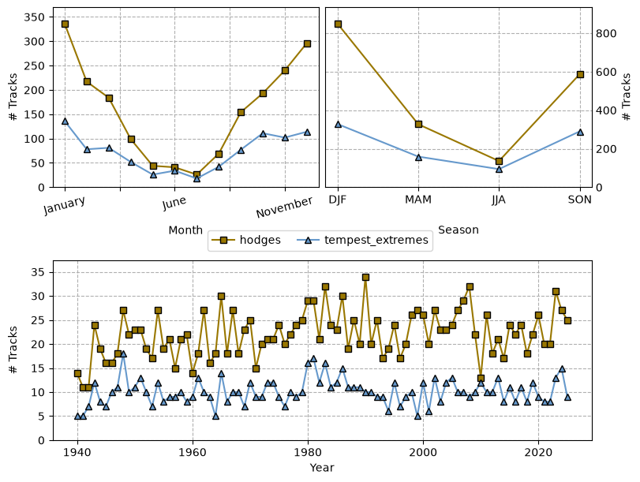
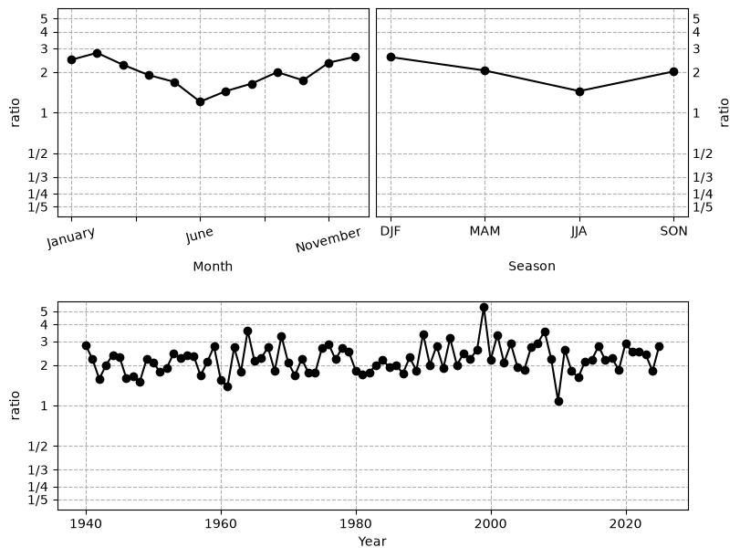
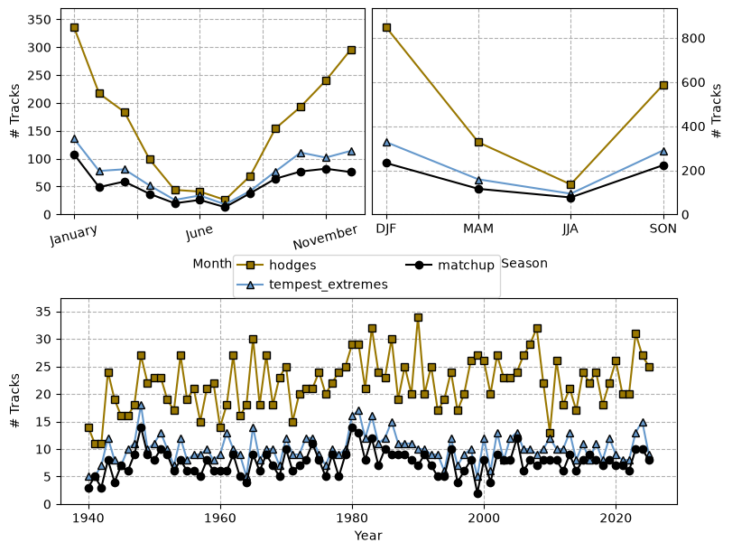
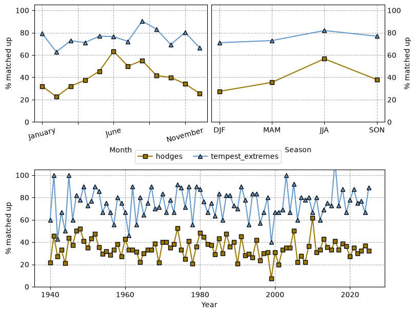
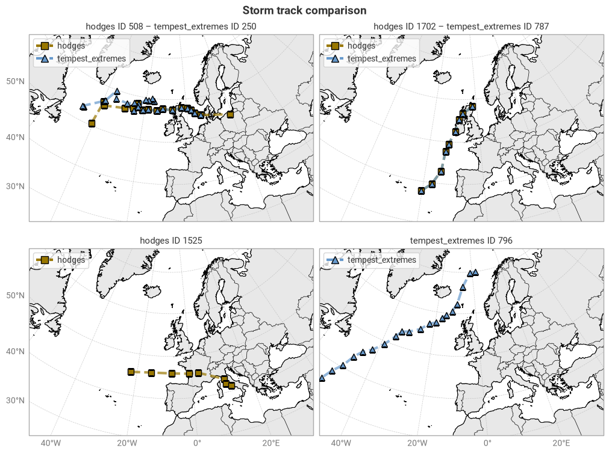
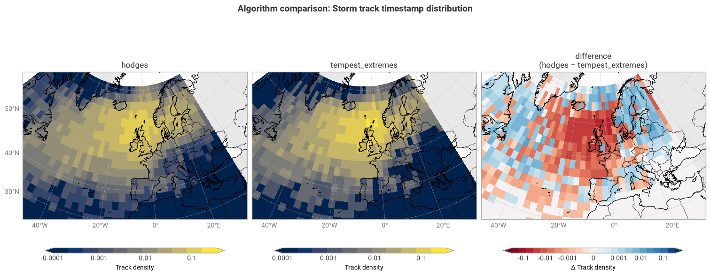
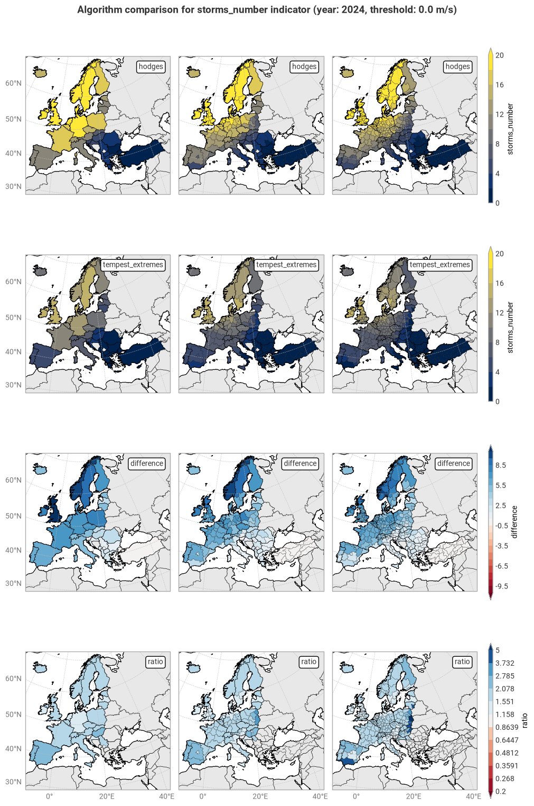
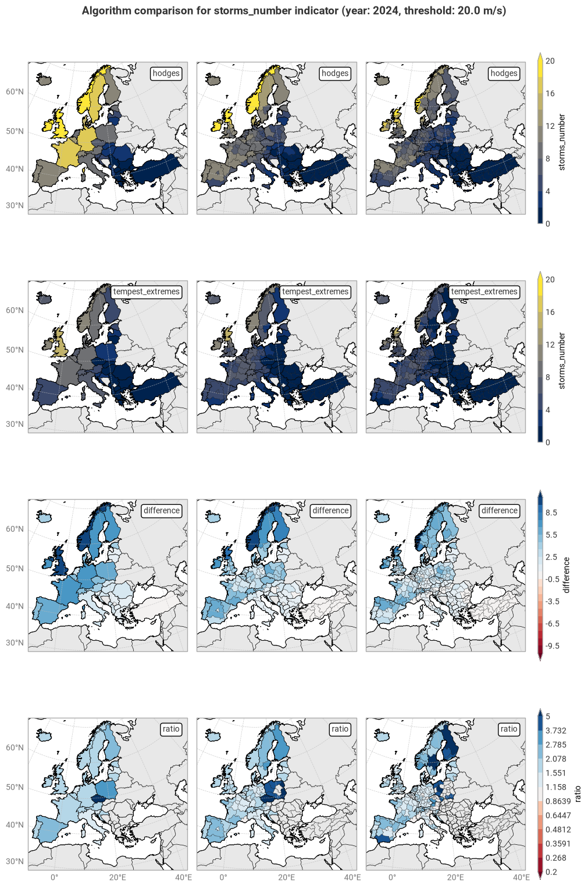
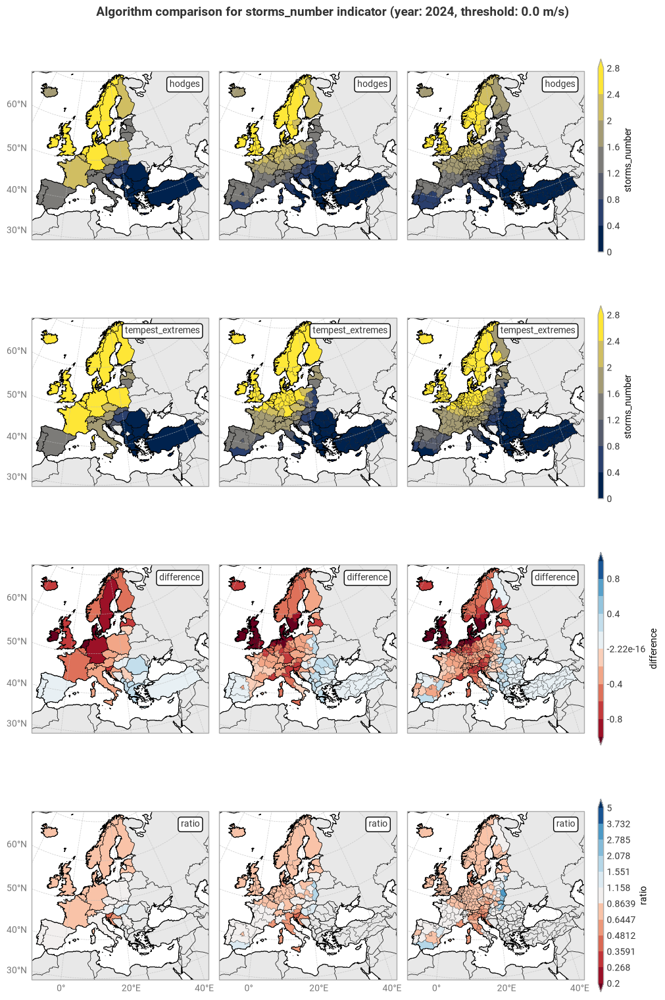
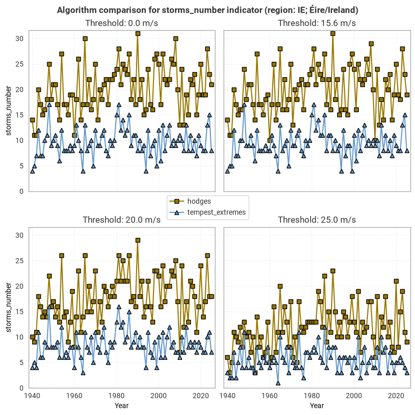

6.1. Consistency between windstorm tracking algorithms – Sensitivity#
Production date: 2026-10-21.
Produced by: Enis Gerxhalija & Olivier Burggraaff (National Physical Laboratory).
🌍 Use case: C3S Enhanced Windstorm Service (EWS)#
❓ Quality assessment question#
How do the tracking algorithms included in the Windstorm tracks and footprints dataset (Hodges, TempestExtremes) compare in terms of sensitivity?
As part of the Copernicus Climate Change Service’s (C3S) Enhanced Windstorm Service (EWS), the Windstorm tracks and footprints derived from reanalysis over Europe between 1940 to present dataset is intended to help users in the insurance sector better understand the risk caused by European windstorms or extra-tropical cyclones (ETCs). ETCs are large low-pressure systems in mid-latitude regions associated with high winds and heavy rain [Walker+20]. These windstorms can cause severe socio-economic damages, with costs in the millions of euros and fatalities ranging from individuals to thousands [Garnier+18].
To generate this dataset, two windstorm tracking algorithms – Hodges/TRACK [Hoskins+02, Hodges+99, Hodges+95] and TempestExtremes [Ullrich+21] – were applied to historical meteorological data from ECMWF’s fifth-generation reanalysis ERA5 [Hersbach+20] to detect windstorm tracks. The resulting dataset contains three products, namely the windstorm tracks found by both algorithms, the associated footprint of each windstorm, and yearly summary indicators for administrative regions.
Because the tracking algorithms have different approaches for detecting windstorms, with Hodges using 3-hourly 850 hPa relative vorticity and TempestExtremes using 6-hourly mean sea level pressure (MSLP), they are intended to be complementary to each another. ETCs are highly complex and diverse systems and different tracking algorithms have different sensitivities, strengths, and limitations [Neu+13]. For example, the MSLP approach generally represents low-frequency, large-scale features, while vorticity represents high-frequency, small-scale features [Neu+13, Hodges+03]
Here, we compare the outputs of both algorithms in terms of sensitivity, i.e. how many windstorms they detect (individually and matching) and the resulting differences in summary indicators. This comparison is performed as an internal consistency check, rather than a validation using external data. The aim is to provide guidance on the choice of algorithm and the consequences of using one over the other, or both at the same time.
📢 Quality assessment statement#
These are the key outcomes of this assessment
The EWS Windstorm tracks and footprints dataset contains around two thousand windstorms. For 1940–2025, 1 899 windstorms were found using the Hodges algorithm and 871 using TempestExtremes. The Hodges algorithm generally detects more (2.2×) windstorms than TempestExtremes.
649 track matchups between algorithms were found, representing 34% of Hodges and 75% of TempestExtremes tracks. The matchup rate is highest in summer and lowest in winter, likely due to the biases in sensitivity of both algorithms. Specific storms may appear in both algorithms (e.g. Ophelia 2017) or only one (e.g. Oscar 2018 and Klaus 2009).
The difference in sensitivity has a strong temporal component, being largest in winter (DJF, 2.6×) and smallest in summer (JJA, 1.5×). Storm counts from both algorithms tend to follow similar yearly trends but there are some differences. The Hodges algorithm has a stronger seasonal bias (DJF / JJA = 6.2) than TempestExtremes (3.5).
The difference in sensitivity has a strong spatial component, with TempestExtremes more biased towards the North Atlantic and North Sea, while Hodges detects more storms farther away, such as in eastern and southern Europe.
The pre-calculated windstorm indicators are consistent over time and space with the track-by-track analysis. For a given region, an internally consistent time series can be derived, allowing for fair comparisons over time with either algorithm. However, the different spatial biases in sensitivity need to be considered when making comparisons across different areas.
📋 Methodology#
This notebook examines the consistency in windstorm characteristics between the two tracking algorithms used in the Windstorm tracks and footprints derived from reanalysis over Europe between 1940 to present dataset. Here, we focus on the sensitivity of each algorithm, by first investigating the individual windstorm tracks and then the resulting summary indicators.
The analysis and results are organised in the following steps, which are detailed in the sections below:
Import all required libraries.
Define helper functions.
Download windstorm tracks from the CDS.
Compare monthly, seasonal, and yearly windstorm track counts.
Find and compare track matchups between algorithms.
Compare geospatial track density.
Download summary indicators from the CDS.
Compare yearly storm count indicator across NUTS levels.
📈 Analysis and results#
1. Code setup#
Note
This notebook uses earthkit for downloading (earthkit-data) and visualising (earthkit-plots) data. Because earthkit is in active development, some functionality may change after this notebook is published. If any part of the code stops functioning, please raise an issue on our GitHub repository so it can be fixed.
Import required libraries#
In this section, we import all the relevant packages needed for running the notebook.
Helper functions#
This section defines some functions and variables used in the following analysis, allowing code cells in later sections to be shorter and ensuring consistency.
Data downloading & (pre-)processing#
The following cell contains some pre-defined constants for convenience, such as a list of variable names in the data:
The following functions download and pre-process NUTS shapefiles from GISCO:
The following cell provides some convenience functions for working with Pandas DataFrames, such as manipulating their indices:
Statistics#
The following functions calculate and display statistics on track counts (total, monthly, seasonal, yearly):
The following functions find and analyse track matchups following the method described in [Hodges+03]:
The following functions handle analysis of geospatial track density:
The following functions calculate and display aggregated statistics based on the summary indicators, such as yearly means:
Visualisation#
The following cell defines earthkit-plots styles for the windstorm indicators. These styles define the colour maps and colour bar ranges for each quantity. It also defines the styles used for the different algorithms in line plots.
The following cell contains some base helper functions (e.g. displaying in Jupyter Notebook or Jupyter Book style):
The following functions are also base helper functions, but specific to geospatial plots. Administrative boundaries are downloaded from the Geographic Information System of the Commission (GISCO) through earthkit-plots, and are © EuroGeographics.
The following functions display comparisons of windstorm track counts over time:
The following functions display geospatial comparisons of individual windstorm tracks:
The following functions display comparisons of spatial windstorm track density:
The following functions display geospatial (choropleth) and time-series comparisons of summary indicators:
2. Windstorm tracks#
We first compare the windstorm tracks found by the Hodges and TempestExtremes algorithms. The following cell defines the years for which we will download data; by default, this is 1940–2025, but these years can be modified below when running the notebook yourself:
Download windstorm tracks#
We download the windstorm tracks from the sis-european-wind-storm-reanalysis CDS entry. This is a simple table which can be loaded into a Pandas DataFrame. For each algorithm (Hodges, TempestExtremes), this table contains all timestamps with corresponding location (latitude, longitude) and some fields describing physical characteristics at that timestamp and location (see the Product User Guide for details).
Note that the id column in this table is defined separately for each algorithm.
For example, the windstorm with id 42 in the Hodges list is likely not the same as the windstorm with that id in the TempestExtremes list.
This notebook uses earthkit-data to download files from the CDS. If you intend to run this notebook multiple times, it is highly recommended that you enable caching to prevent having to download the same files multiple times. If you prefer not to use earthkit, the following requests can also be used with the cdsapi module. In either case (earthkit-data or cdsapi), it is required to set up a CDS account and API key as explained on the CDS website.
| time | latitude | longitude | fg10 | lsm | msl | ||
|---|---|---|---|---|---|---|---|
| algorithm | id | ||||||
| hodges | 1 | 1940-02-22 00:00:00 | 63.25 | -24.00 | 10.452867 | 0.000000 | 98962.875 |
| 1 | 1940-02-22 06:00:00 | 63.50 | -25.00 | 12.599429 | 0.000000 | 98905.190 | |
| 1 | 1940-02-22 12:00:00 | 62.75 | -11.25 | 5.919555 | 0.000000 | 98809.125 | |
| 1 | 1940-02-22 18:00:00 | 63.00 | -12.00 | 7.741296 | 0.000000 | 98755.560 | |
| 1 | 1940-02-23 00:00:00 | 62.75 | -12.25 | 4.190840 | 0.000000 | 98655.310 | |
| ... | ... | ... | ... | ... | ... | ... | ... |
| tempest_extremes | 871 | 2025-10-29 00:00:00 | 57.50 | -7.50 | 7.256220 | 0.203919 | 98960.750 |
| 871 | 2025-10-29 06:00:00 | 57.75 | -6.50 | 5.611463 | 0.058715 | 98859.560 | |
| 871 | 2025-10-29 12:00:00 | 58.50 | -2.25 | 7.861186 | 0.000000 | 98899.120 | |
| 871 | 2025-10-30 12:00:00 | 55.75 | 15.75 | 7.850687 | 0.000000 | 98927.310 | |
| 871 | 2025-10-30 18:00:00 | 56.50 | 19.00 | 5.625481 | 0.000000 | 98920.690 |
34254 rows × 6 columns
Windstorm count comparison#
First, we compare the overall number of storms detected by each algorithm:
| storm count | |
|---|---|
| algorithm | |
| hodges | 1899 |
| tempest_extremes | 871 |
It is immediately clear from this comparison that the Hodges algorithm detects many more windstorms overall than TempestExtremes, with 2.2× the storm count.
Next, we compare storm counts over monthly, seasonal, and yearly time scales. For this, each individual storm is assigned a single timestamp based on when it was first detected.
Both algorithms detect considerably more windstorms in the northern autumn (SON) and winter (DJF) months than in the other half of the year (Figure 6.1.1), which is a known bias in some tracking algorithms [Neu+13]. The year-to-year windstorm counts from both algorithms generally follow each other, with peaks and troughs in the same locations, albeit with some notable exceptions (e.g. 1990, 2010). This behaviour is reflected in the ratio of track counts (Figure 6.1.2), which is generally around 2 but fluctuates as high as 5 and as low as 1 in the 1940–2025 range. Seasonally, the ratio varies from 1.45 in summer (JJA) to 2.59 in winter:
| DJF | MAM | JJA | SON | |
|---|---|---|---|---|
| algorithm | ||||
| hodges | 849 | 327 | 136 | 587 |
| tempest_extremes | 328 | 159 | 94 | 290 |
| ratio | 2.59 | 2.06 | 1.45 | 2.02 |
The bias towards winter windstorms, defined here as the ratio of the DJF storm count over the JJA one, is almost twice as large in Hodges as in TempestExtremes:
| DJF / JJA | |
|---|---|
| algorithm | |
| hodges | 6.242647 |
| tempest_extremes | 3.489362 |
This bias is caused by physical differences between winter and summer ETCs, such as winter ETCs generally being more intense and thus easier to identify and track for some algorithms, and summer having more shallow ETCs that are excluded by some algorithms [Walker+20, Neu+13].
In summary, the Hodges algorithm is generally more sensitive than TempestExtremes, detecting more windstorms both overall and on different timescales. However, the algorithms react differently to different windstorm characteristics, causing different biases in their sensitivity across the seasons (e.g. winter vs. summer).

Fig. 6.1.1 Number of tracks found by the Hodges and TempestExtremes algorithms over the period 1940–2025 by calendar month, season, and year.#

Fig. 6.1.2 Ratio of tracks found by the Hodges and TempestExtremes algorithms (Hodges / TempestExtremes) over the period 1940–2025 by calendar month, season, and year.#
Track-to-track matchup comparison#
Next, we compare the behaviour of the two algorithms for windstorm tracks found by both. This requires applying a track-to-track matchup method, for which we use the one described in [Hodges+03], which works as follows:
For each pair of tracks (Hodges–TempestExtremes), find the number of matching timestamps.
Keep only those pairs with ≥60% (relative to the mean track length between the two algorithms) overlap.
For each remaining pair of tracks, compute the mean distances between matched-up timestamps.
Keep only those pairs where the mean distance is <300 km.
Using this method, 649 track matchups are found. This number may vary when using a different algorithm or different threshold parameters. These matchups represent 34.2% of all tracks found by Hodges and 74.5% of those found by TempestExtremes. As before, the number of matchups and the matchup fraction vary over time (Figures 6.1.3, 6.1.4), being essentially a combination of the trends for the individual algorithms.
Overall, agreement appears to be best in summer, which may be because both algorithms detect the fewest storms in summer – any detected summer ETCs are more likely to be relatively ‘easy’ detections, and thus more likely to appear in both or neither algorithm than in one but not the other.
Matchup pairs fall into several categories (Figure 6.1.5). The most general case (top left; Hodges 508, TempestExtremes 250) has both algorithms first detecting the windstorm at different times and locations, e.g. because it is not yet clearly defined or because there are multiple systems close to each other, and then converging on a common path. These are cases where the overlap fraction is between 60–100% and the mean distance is non-zero. For some windstorms (top right; Hodges 1702, TempestExtremes 787; Storm Ophelia), the algorithms match exactly in time and space. Lastly, there are examples where storms are detected by only Hodges (bottom left; Hodges 1525; Storm Klaus) or TempestExtremes (bottom right; TempestExtremes 796; Storm Oscar).
Using only matched-up pairs is a good solution when confidence is more important than coverage, for example when investigating windstorm dynamics or hazards. Coverage may be more important in other use cases, such as estimating total storm counts or when one is particularly interested in storms that are difficult to detect with the biases present in these algorithms. In the latter case, one can use the full catalogue provided in this dataset or choose only one algorithm.

Fig. 6.1.3 Number of tracks found by the Hodges and TempestExtremes algorithms, as well as the number of matched-up tracks, over the period 1940–2025 by calendar month, season, and year.#

Fig. 6.1.4 Fraction of storm tracks from each algorithm (Hodges, TempestExtremes) that have a matchup with the other over the period 1940–2025 by calendar month, season, and year. Fractions >100% may occur due to mismatching timestamps, e.g. a storm first detected on 31 December 2015 by TempestExtremes and on 1 January 2016 by Hodges.#

Fig. 6.1.5 Geospatial comparison of storm tracks from each algorithm (Hodges, TempestExtremes) for individual windstorm events. Includes storms found in both algorithms (top row) and found in only one algorithm (bottom).#
Spatial track density#
Lastly, we compare the spatial density of windstorm tracks across the domain of the dataset (North Atlantic) between the two algorithms. For each grid cell, this density is computed as the number of unique windstorm tracks that pass through that cell, normalised by the total number of tracks [Pérez-Alarcón+24, Neu+13], both calculated individually for each algorithm. For visual clarity, this calculation is performed on a coarsened grid (2.5° × 2.5°).
Both algorithms show a visually similar distribution (Figure 6.1.6). The main difference is that TempestExtremes has relatively more density over the seas just west of mainland Europe (Iceland–Spain) while Hodges has more over northern and eastern Europe (Norway–Belarus). This is likely the result of the Hodges algorithm tracking storms for longer (as discussed in a forthcoming quality assessment for this dataset), thus capturing the tail ends of storms over these areas.

Fig. 6.1.6 Geospatial density of windstorm track timestamps found by the Hodges and TempestExtremes algorithms, aggregated to a 2.5° grid, and the difference (Hodges – TempestExtremes). A negative difference (red) means TempestExtremes has a higher density, positive (blue) means Hodges has a higher density. The density is relative to the total number of windstorm tracks in each algorithm individually.#
3. Summary indicators#
In addition to the individual windstorm tracks and footprints,
the sis-european-wind-storm-reanalysis
CDS entry
provides pre-calculated yearly windstorm indicators describing storm number and intensity.
These are
organised by NUTS
(Nomenclature of Territorial Units for Statistics)
level 0, 1, and 2
region.
Of these indicators,
storms_number
counts the number of storms that have affected the given region.
A storm event is considered to affect a region if its decontaminated footprint intersects the region.
Indicators are provided for both tracking algorithms (Hodges and TempestExtremes) and for four different thresholds (0.0, 15.6, 20.0, and 25.0 m/s), i.e. considering only those parts of a storm where the wind gust exceeds this threshold. The thresholds allow the user to choose if they want to consider all storms or only particularly intense ones, for example.
Download windstorm summary indicators#
We download the full windstorm summary indicator table from the CDS. Because this is a simple table, the data are loaded into a Pandas DataFrame.
| year | region | threshold | storms_number | mean_wind_gust | ssi | normalised_ssi | area_ratio | wind_gust_ratio | algorithm | |
|---|---|---|---|---|---|---|---|---|---|---|
| 0 | 1940 | FR | 0.0 | 10 | 19.450012 | 3.954249e+09 | 0.292018 | 0.980225 | 0.667874 | hodges |
| 1 | 1940 | FR | 15.6 | 10 | 21.074094 | 5.029804e+09 | 0.371447 | 0.980225 | 0.723641 | hodges |
| 2 | 1940 | FR | 20.0 | 9 | 23.179559 | 6.692985e+09 | 0.494271 | 0.980225 | 0.795939 | hodges |
| 3 | 1940 | FR | 25.0 | 5 | 26.403130 | 9.891692e+09 | 0.730493 | 0.980225 | 0.906630 | hodges |
| 4 | 1940 | HR | 0.0 | 2 | 13.676930 | 1.374967e+08 | 0.243874 | 0.959770 | 0.633382 | hodges |
| ... | ... | ... | ... | ... | ... | ... | ... | ... | ... | ... |
| 341243 | 2025 | NO07 | 25.0 | 2 | 28.244418 | 2.161430e+09 | 1.543523 | 1.000000 | 1.155680 | tempest_extremes |
| 341244 | 2025 | NO0B | 0.0 | 0 | NaN | NaN | NaN | NaN | NaN | tempest_extremes |
| 341245 | 2025 | NO0B | 15.6 | 0 | NaN | NaN | NaN | NaN | NaN | tempest_extremes |
| 341246 | 2025 | NO0B | 20.0 | 0 | NaN | NaN | NaN | NaN | NaN | tempest_extremes |
| 341247 | 2025 | NO0B | 25.0 | 0 | NaN | NaN | NaN | NaN | NaN | tempest_extremes |
341248 rows × 10 columns
Visualising the NUTS regions requires the corresponding shapefiles, which can be retrieved from GISCO. These ancillary data are loaded into a GeoPandas GeoDataFrame and combined with the indicators table:
Yearly storm count comparison#
We calculate the per-point difference and ratio between algorithms
(Hodges – TempestExtremes, Hodges / TempestExtremes)
and append them to the GeoDataFrame as additional entries along the algorithm index:
Next, we calculate the yearly mean number of storms affecting each region. The following table only shows NUTS level 0 (country) for brevity, but the code cell can be modified to NUTS level 1 or 2 if running the notebook yourself.
| storms_number (yearly mean) | |||||
|---|---|---|---|---|---|
| threshold | 0.0 | 15.6 | 20.0 | 25.0 | |
| region | algorithm | ||||
| AL | hodges | 0.28 | 0.28 | 0.21 | 0.13 |
| tempest_extremes | 0.09 | 0.09 | 0.09 | 0.06 | |
| difference | 0.19 | 0.19 | 0.12 | 0.07 | |
| ratio | 3.00 | 3.00 | 2.25 | 2.20 | |
| AT | hodges | 6.63 | 5.81 | 4.21 | 1.94 |
| tempest_extremes | 3.21 | 2.70 | 1.90 | 0.80 | |
| difference | 3.42 | 3.12 | 2.31 | 1.14 | |
| ratio | 2.07 | 2.16 | 2.22 | 2.42 | |
| BE | hodges | 13.86 | 12.70 | 9.09 | 3.64 |
| tempest_extremes | 6.76 | 6.07 | 4.14 | 1.48 | |
| difference | 7.10 | 6.63 | 4.95 | 2.16 | |
| ratio | 2.05 | 2.09 | 2.20 | 2.46 | |
| BG | hodges | 0.37 | 0.24 | 0.17 | 0.05 |
| tempest_extremes | 0.10 | 0.08 | 0.05 | 0.00 | |
| difference | 0.27 | 0.16 | 0.13 | 0.05 | |
| ratio | 3.56 | 3.00 | 3.75 | nan | |
| CH | hodges | 6.87 | 6.38 | 5.30 | 3.05 |
| tempest_extremes | 3.30 | 3.09 | 2.48 | 1.33 | |
| difference | 3.57 | 3.29 | 2.83 | 1.72 | |
| ratio | 2.08 | 2.06 | 2.14 | 2.30 | |
| CY | hodges | 0.00 | 0.00 | 0.00 | 0.00 |
| tempest_extremes | 0.00 | 0.00 | 0.00 | 0.00 | |
| difference | 0.00 | 0.00 | 0.00 | 0.00 | |
| ratio | nan | nan | nan | nan | |
| CZ | hodges | 9.33 | 7.48 | 4.72 | 1.55 |
| tempest_extremes | 4.13 | 3.24 | 1.80 | 0.60 | |
| difference | 5.20 | 4.23 | 2.92 | 0.94 | |
| ratio | 2.26 | 2.30 | 2.62 | 2.56 | |
| DE | hodges | 17.02 | 15.91 | 11.85 | 6.08 |
| tempest_extremes | 8.42 | 7.73 | 5.35 | 2.55 | |
| difference | 8.60 | 8.17 | 6.50 | 3.53 | |
| ratio | 2.02 | 2.06 | 2.22 | 2.39 | |
| DK | hodges | 18.97 | 18.07 | 13.02 | 5.65 |
| tempest_extremes | 9.13 | 8.52 | 5.64 | 2.42 | |
| difference | 9.84 | 9.55 | 7.38 | 3.23 | |
| ratio | 2.08 | 2.12 | 2.31 | 2.34 | |
| EE | hodges | 10.08 | 8.97 | 4.77 | 1.30 |
| tempest_extremes | 4.12 | 3.48 | 1.70 | 0.44 | |
| difference | 5.97 | 5.49 | 3.07 | 0.86 | |
| ratio | 2.45 | 2.58 | 2.81 | 2.95 | |
| EL | hodges | 0.22 | 0.22 | 0.17 | 0.07 |
| tempest_extremes | 0.07 | 0.06 | 0.06 | 0.01 | |
| difference | 0.15 | 0.16 | 0.12 | 0.06 | |
| ratio | 3.17 | 3.80 | 3.00 | 6.00 | |
| ES | hodges | 5.23 | 5.14 | 4.87 | 3.83 |
| tempest_extremes | 2.60 | 2.57 | 2.37 | 1.87 | |
| difference | 2.63 | 2.57 | 2.50 | 1.95 | |
| ratio | 2.01 | 2.00 | 2.05 | 2.04 | |
| FI | hodges | 14.85 | 12.78 | 7.14 | 1.81 |
| tempest_extremes | 6.15 | 5.07 | 2.72 | 0.57 | |
| difference | 8.70 | 7.71 | 4.42 | 1.24 | |
| ratio | 2.41 | 2.52 | 2.62 | 3.18 | |
| FR | hodges | 13.76 | 13.53 | 12.14 | 7.95 |
| tempest_extremes | 6.86 | 6.77 | 5.90 | 3.84 | |
| difference | 6.90 | 6.77 | 6.24 | 4.12 | |
| ratio | 2.01 | 2.00 | 2.06 | 2.07 | |
| HR | hodges | 2.14 | 1.69 | 1.00 | 0.38 |
| tempest_extremes | 0.93 | 0.74 | 0.44 | 0.14 | |
| difference | 1.21 | 0.94 | 0.56 | 0.24 | |
| ratio | 2.30 | 2.27 | 2.26 | 2.75 | |
| HU | hodges | 3.62 | 2.48 | 0.83 | 0.10 |
| tempest_extremes | 1.51 | 1.03 | 0.24 | 0.01 | |
| difference | 2.10 | 1.44 | 0.58 | 0.09 | |
| ratio | 2.39 | 2.39 | 3.38 | 9.00 | |
| IE | hodges | 20.23 | 19.79 | 17.76 | 11.81 |
| tempest_extremes | 9.67 | 9.47 | 8.44 | 5.56 | |
| difference | 10.56 | 10.33 | 9.31 | 6.26 | |
| ratio | 2.09 | 2.09 | 2.10 | 2.13 | |
| IS | hodges | 16.44 | 15.63 | 13.62 | 8.42 |
| tempest_extremes | 7.51 | 7.09 | 5.99 | 3.58 | |
| difference | 8.93 | 8.53 | 7.63 | 4.84 | |
| ratio | 2.19 | 2.20 | 2.27 | 2.35 | |
| IT | hodges | 5.45 | 5.09 | 3.97 | 2.15 |
| tempest_extremes | 2.60 | 2.36 | 1.81 | 0.98 | |
| difference | 2.85 | 2.73 | 2.15 | 1.17 | |
| ratio | 2.09 | 2.16 | 2.19 | 2.20 | |
| LI | hodges | 0.00 | 0.00 | 0.00 | 0.00 |
| tempest_extremes | 0.00 | 0.00 | 0.00 | 0.00 | |
| difference | 0.00 | 0.00 | 0.00 | 0.00 | |
| ratio | nan | nan | nan | nan | |
| LT | hodges | 9.24 | 7.07 | 3.24 | 0.91 |
| tempest_extremes | 3.64 | 2.67 | 1.14 | 0.28 | |
| difference | 5.60 | 4.40 | 2.10 | 0.63 | |
| ratio | 2.54 | 2.64 | 2.85 | 3.25 | |
| LU | hodges | 11.13 | 8.76 | 4.92 | 1.45 |
| tempest_extremes | 5.42 | 4.03 | 2.13 | 0.58 | |
| difference | 5.71 | 4.72 | 2.79 | 0.87 | |
| ratio | 2.05 | 2.17 | 2.31 | 2.50 | |
| LV | hodges | 9.71 | 7.83 | 3.80 | 1.08 |
| tempest_extremes | 3.90 | 2.92 | 1.30 | 0.33 | |
| difference | 5.81 | 4.91 | 2.50 | 0.76 | |
| ratio | 2.49 | 2.68 | 2.92 | 3.32 | |
| ME | hodges | 0.42 | 0.38 | 0.29 | 0.17 |
| tempest_extremes | 0.14 | 0.14 | 0.12 | 0.07 | |
| difference | 0.28 | 0.24 | 0.17 | 0.10 | |
| ratio | 3.00 | 2.75 | 2.50 | 2.50 | |
| MK | hodges | 0.24 | 0.21 | 0.16 | 0.02 |
| tempest_extremes | 0.08 | 0.08 | 0.05 | 0.01 | |
| difference | 0.16 | 0.13 | 0.12 | 0.01 | |
| ratio | 3.00 | 2.57 | 3.50 | 2.00 | |
| MT | hodges | 0.00 | 0.00 | 0.00 | 0.00 |
| tempest_extremes | 0.00 | 0.00 | 0.00 | 0.00 | |
| difference | 0.00 | 0.00 | 0.00 | 0.00 | |
| ratio | nan | nan | nan | nan | |
| NL | hodges | 15.91 | 14.93 | 10.97 | 4.94 |
| tempest_extremes | 7.87 | 7.33 | 5.21 | 2.08 | |
| difference | 8.03 | 7.60 | 5.76 | 2.86 | |
| ratio | 2.02 | 2.04 | 2.10 | 2.37 | |
| NO | hodges | 20.83 | 20.42 | 18.12 | 11.55 |
| tempest_extremes | 9.49 | 9.26 | 7.93 | 4.52 | |
| difference | 11.34 | 11.16 | 10.19 | 7.02 | |
| ratio | 2.19 | 2.21 | 2.28 | 2.55 | |
| PL | hodges | 12.02 | 9.91 | 6.31 | 2.44 |
| tempest_extremes | 5.36 | 4.24 | 2.49 | 0.86 | |
| difference | 6.66 | 5.66 | 3.83 | 1.58 | |
| ratio | 2.24 | 2.33 | 2.54 | 2.84 | |
| PT | hodges | 3.56 | 3.43 | 3.09 | 2.12 |
| tempest_extremes | 1.80 | 1.77 | 1.59 | 1.07 | |
| difference | 1.76 | 1.66 | 1.50 | 1.05 | |
| ratio | 1.97 | 1.94 | 1.94 | 1.98 | |
| RO | hodges | 2.02 | 1.49 | 0.93 | 0.34 |
| tempest_extremes | 0.73 | 0.47 | 0.31 | 0.10 | |
| difference | 1.29 | 1.02 | 0.62 | 0.23 | |
| ratio | 2.76 | 3.20 | 2.96 | 3.22 | |
| RS | hodges | 1.07 | 0.66 | 0.20 | 0.03 |
| tempest_extremes | 0.38 | 0.21 | 0.09 | 0.01 | |
| difference | 0.69 | 0.45 | 0.10 | 0.02 | |
| ratio | 2.79 | 3.17 | 2.12 | 3.00 | |
| SE | hodges | 20.58 | 19.53 | 13.66 | 5.52 |
| tempest_extremes | 9.24 | 8.70 | 5.79 | 1.99 | |
| difference | 11.34 | 10.84 | 7.87 | 3.53 | |
| ratio | 2.23 | 2.25 | 2.36 | 2.78 | |
| SI | hodges | 2.83 | 2.07 | 0.98 | 0.16 |
| tempest_extremes | 1.24 | 0.92 | 0.49 | 0.06 | |
| difference | 1.58 | 1.15 | 0.49 | 0.10 | |
| ratio | 2.27 | 2.25 | 2.00 | 2.80 | |
| SK | hodges | 4.51 | 3.81 | 1.85 | 0.35 |
| tempest_extremes | 1.91 | 1.53 | 0.59 | 0.08 | |
| difference | 2.60 | 2.28 | 1.26 | 0.27 | |
| ratio | 2.37 | 2.48 | 3.12 | 4.29 | |
| TR | hodges | 0.08 | 0.07 | 0.05 | 0.03 |
| tempest_extremes | 0.01 | 0.01 | 0.00 | 0.00 | |
| difference | 0.07 | 0.06 | 0.05 | 0.03 | |
| ratio | 7.00 | 6.00 | nan | nan | |
| UK | hodges | 21.76 | 21.67 | 20.87 | 17.33 |
| tempest_extremes | 9.98 | 9.95 | 9.60 | 7.71 | |
| difference | 11.78 | 11.72 | 11.27 | 9.62 | |
| ratio | 2.18 | 2.18 | 2.17 | 2.25 | |
As in the previous analysis, the Hodges algorithm generally detects 2–3× as many storms as TempestExtremes in most areas and for all four thresholds. The Hodges / TempestExtremes storm count ratio is closest to 1 around the North Sea (Figures 6.1.7, 6.1.8), which is the area most affected by ETCs (Figure 6.1.6). This is likely a combination of a real bias in sensitivity – both algorithms being equally sensitive to (the types of) storms occurring in the North Sea but Hodges being more sensitive to (the types or stages of) storms in areas farther away – and noise, with there being fewer storms in those outlying areas and thus noisier statistics. All windstorm tracking algorithms have their own unique spatial biases, e.g. some detecting fewer storms in the Mediterranean due to some threshold criteria in the algorithm tending to exclude the types of storms that occur there [Pérez-Alarcón+24].
The relative number of windstorms (Figure 6.1.9; relative to the mean over all years and NUTS regions for a given threshold and algorithm) is highest in Northwestern Europe for both algorithms, with TempestExtremes showing the strongest concentration bias (red areas in the difference and ratio panels). These biases must be accounted for to make fair comparisons across Europe. This is a fundamental difficulty in the field of windstorm tracking [Pérez-Alarcón+24, Walker+20, Neu+13].
For the example NUTS 0 region of Éire/Ireland, the time series (Figure 6.1.10) is similar to the overall track count time series seen before (Figure 6.1.3). This correspondence changes when evaluating different regions, particularly ones farther from the North Atlantic / North Sea area because the number of windstorms in outlying areas will be less tightly correlated to the total. This can be customised in the next code cell when running this notebook yourself.
In conclusion, the pre-calculated windstorm indicators provide a convenient summary of windstorm events that is consistent over time and space with the track-by-track analysis. For a given region, an internally consistent time series can be derived, allowing for fair comparisons over time with either algorithm. However, the algorithms have different spatial biases in their sensitivity that need to be considered when making comparisons across different areas of Europe.

Fig. 6.1.7 Comparison between the Hodges (top) and TempestExtremes (second from top) algorithms,
including the difference Hodges – TempestExtremes (second from bottom) and ratio Hodges / TempestExtremes (bottom),
for the storms_number summary indicator
across Europe.
Includes all storms (threshold of 0.0 m/s).
Columns correspond to NUTS levels 0–2 (left to right).#

Fig. 6.1.8 Comparison between the Hodges (top) and TempestExtremes (second from top) algorithms,
including the difference Hodges – TempestExtremes (second from bottom) and ratio Hodges / TempestExtremes (bottom),
for the storms_number summary indicator
across Europe.
Includes only storms that pass the 20.0 m/s threshold.
Columns correspond to NUTS levels 0–2 (left to right).#

Fig. 6.1.9 Comparison between the Hodges (top) and TempestExtremes (second from top) algorithms,
including the difference Hodges – TempestExtremes (second from bottom) and ratio Hodges / TempestExtremes (bottom),
for the storms_number summary indicator
across Europe.
Includes all storms (threshold of 0.0 m/s).
Columns correspond to NUTS levels 0–2 (left to right).#

Fig. 6.1.10 Comparison between the Hodges (brown) and TempestExtremes (blue) algorithms
for the storms_number summary indicator
over time.
Includes only storms that affected the “IE” NUTS 0 region (Éire/Ireland).#
ℹ️ If you want to know more#
Key resources#
The CDS catalogue entries for the data used were:
Windstorm tracks and footprints derived from reanalysis over Europe between 1940 to present: sis-european-wind-storm-reanalysis
More about windstorm tracking algorithms:
IMILAST: A Community Effort to Intercompare Extratropical Cyclone Detection and Tracking Algorithms
The numerous approaches to tracking extratropical cyclones and the challenges they present
Hodges / TRACK
TempestExtremes
Code libraries used:
References#
[Garnier+18] E. Garnier, P. Ciavola, T. Spencer, O. Ferreira, C. Armaroli, and A. McIvor, ‘Historical analysis of storm events: Case studies in France, England, Portugal and Italy’, Coastal Engineering, vol. 134, pp. 10–23, Apr. 2018, doi: 10.1016/j.coastaleng.2017.06.014.
[Hersbach+20] H. Hersbach et al., ‘The ERA5 global reanalysis’, Quarterly Journal of the Royal Meteorological Society, vol. 146, no. 730, pp. 1999–2049, May 2020, doi: 10.1002/qj.3803.
[Hodges+95] K. I. Hodges, ‘Feature Tracking on the Unit Sphere’, Monthly Weather Review, vol. 123, no. 12, pp. 3458–3465, Dec. 1995, doi: 10.1175/1520-0493(1995)123<3458:FTOTUS>2.0.CO;2.
[Hodges+99] K. I. Hodges, ‘Adaptive Constraints for Feature Tracking’, Monthly Weather Review, vol. 127, no. 6, pp. 1362–1373, Jun. 1999, doi: 10.1175/1520-0493(1999)127<1362:ACFFT>2.0.CO;2.
[Hodges+03] K. I. Hodges, B. J. Hoskins, J. Boyle, and C. Thorncroft, ‘A Comparison of Recent Reanalysis Datasets Using Objective Feature Tracking: Storm Tracks and Tropical Easterly Waves’, Monthly Weather Review, vol. 131, no. 9, pp. 2012–2037, Sep. 2003, doi: 10.1175/1520-0493(2003)131<2012:ACORRD>2.0.CO;2.
[Hoskins+02] B. J. Hoskins and K. I. Hodges, ‘New Perspectives on the Northern Hemisphere Winter Storm Tracks’, Journal of the Atmospheric Sciences, vol. 59, no. 6, pp. 1041–1061, Mar. 2002, doi: 10.1175/1520-0469(2002)059<1041:NPOTNH>2.0.CO;2.
[Neu+13] U. Neu et al., ‘IMILAST: A Community Effort to Intercompare Extratropical Cyclone Detection and Tracking Algorithms’, Bulletin of the American Meteorological Society, vol. 94, no. 4, pp. 529–547, Apr. 2013, doi: 10.1175/BAMS-D-11-00154.1.
[Pérez-Alarcón+24] A. Pérez-Alarcón, P. Coll-Hidalgo, R. M. Trigo, R. Nieto, and L. Gimeno, ‘CyTRACK: An open-source and user-friendly python toolbox for detecting and tracking cyclones’, Environmental Modelling & Software, vol. 176, p. 106027, May 2024, doi: 10.1016/j.envsoft.2024.106027.
[Ullrich+21] P. A. Ullrich, C. M. Zarzycki, E. E. McClenny, M. C. Pinheiro, A. M. Stansfield, and K. A. Reed, ‘TempestExtremes v2.1: a community framework for feature detection, tracking, and analysis in large datasets’, Geoscientific Model Development, vol. 14, no. 8, pp. 5023–5048, Aug. 2021, doi: 10.5194/gmd-14-5023-2021.
[Walker+20] E. Walker, D. Mitchell, and W. Seviour, ‘The numerous approaches to tracking extratropical cyclones and the challenges they present’, Weather, vol. 75, no. 11, pp. 336–341, Nov. 2020, doi: 10.1002/wea.3861.